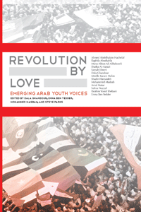

<body bgcolor="#FFFFFF" text="#000000" link="#0000FF" vlink="#CC0000" alink="#CC0000"><center><hr width="350" size="1" align="center" noshade>Voices of youth from the Arab Spring<hr width="350" size="1" align="center" noshade><p><a href="https://cdcshoppingcart.uchicago.edu/Cart/ChicagoBook.aspx?ISBN=9780984042999&&PRESS=temple" target="_top">Buy this book!</a> | <a href="https://cdcshoppingcart.uchicago.edu/Cart/Cart.aspx?PRESS=temple" target="_top">View Cart</a> | <a href="https://cdcshoppingcart.uchicago.edu/Cart/Cart.aspx?PRESS=temple" target="_top">Check Out</a></p><p></p></center><!--none//--><h1>Revolution By Love</h1>
<h3>edited by Dala Ghandour, Emna Ben Yedder, Mohammed Masbah and Steve Parks</h3>
<P>paper 0-9840429-9-7 $22.95, May 14, <FONT COLOR=#990033>Available</FONT>
<BR> 194 pp
5x7
</P><P>Beginning in Tunisia and spreading across the Middle East and North Africa, everyday citizens stepped into the streets, staking their claim to a democratic future. The image of these protests captured the imagination of the world. <I>Revolution by Love</i> takes you inside these protests, onto those streets, and shares with you the stories of the individuals who made this historic moment possible. The book's contributors bear witness to the bravery of Libyans who faced down troops as they secured satellite technology to share with the world what was happening in Tripoli; the courage of doctors, facing gunfire, as they treated patients in Bahrain; and the everyday struggles of families in Gaza. At each moment, within every story shared, there is also a continual return to the love shared with friends and within families-a love that served as the foundation for the protests that changed the world.
<P><I>Contributors include: Ahmed Abdelhakim Hachelaf, Raghda Abushahla, Muna Abbas Ali AlBuloushi, Shatha Al-Harazi, Samah Elmeri, Dala Ghandour, Mirelle Karam Halim, Shadin Hamaideh, Mohammed Masbah, Amal Matar, Salma Nazzal, Ibrahim Yousif Shebani, and Emna Ben Yedder.</I>
<P>Published in association with New City Community Press.
<BR>&nbsp;<h2>Contents</h2><P>
<p>Introduction
<br>
<br>The Pearl of the Gulf &#8226; <i>Amal Matar</i>
<br>Libya: The Revolution of Four Days &#8226; <i>Ibrahim Yousif Shebani</i>
<br>The Heart Revolution &#8226; <i>Dala Ghandour</i>
<br>Here Comes the Revolution &#8226; <i>Samah Elmeri</i>
<br>Crazy Girls: What Every Revolution Needs &#8226; <i>Shatha Al-Harazi</i>
<br>Behind the Scenes &#8226; <i>Mirelle Karam Halim</i>
<br>Life in Gaza: A Palestinian Woman’s Perspective &#8226; <i>Raghda Abushahla</i>
<br>A Recipe for Engagement: Many Injustices, a Dose of Critical Thinking, and Action &#8226; <i>Emna Ben Yedder</i>
<br>Carrying Family Traditions &#8226; <i>Salma Nazzal</i>
<br>Educating People: A True Panacea &#8226; <i>Ahmed Hachelaf</i>
<br>Yes, We Are Sexy Folks! &#8226; <i>Shadin Hamaideh</i>
<br>Que du Bien! Ambition, Capacity, and Milieu: Keys to Success &#8226; <i>Mohammed Masbah</i>
<br>Political Engagement: Responsibility and Education &#8226; <i>Muna Abbas Ali AlBuloushi</i>
<br>
<br>Epilogue
<br>Bios
<br>Acknowledgements
</P><BR>&nbsp;<H2>About the Author(s)</H2>
<P><b>Dala Ghandour</b> is an Attorney and Certified Mediator who specializes in family status legal matters.</P>
<P><b>Emna Ben Yedder</b> is a Manager in Mergers and Acquisitions at SWICORP, a corporate finance advisory private equity and principal investment firm with a specific focus on the Middle East and North Africa.</P>
<P><b>Mohammed Masbah</b> is a doctoral Fellow at Stiftung Wissenschaft und Politik (SWP)-Berlin and a doctoral candidate in sociology at Mohammed V University in Rabat, Morocco.</P>
<P><b>Steve Parks</b> is an Associate Professor of Writing at Syracuse University and Founder of New City Community Press.</P>
<BR><H2>Subject Categories</H2>
<p><A HREF="/tempress/biography.html" TARGET="_top">Biography/Memoir/Autobiography</a>
<BR><A HREF="/tempress/political.html" TARGET="_top">Political Science and Public Policy</a>
<BR><A HREF="/tempress/youth.html" TARGET="_top">Youth Studies</a>
</p>
<p align="center"><a href="https://cdcshoppingcart.uchicago.edu/Cart/ChicagoBook.aspx?ISBN=9780984042999&&PRESS=temple" target="_top">Buy this book!</a> | <a href="https://cdcshoppingcart.uchicago.edu/Cart/Cart.aspx?PRESS=temple" target="_top">View Cart</a> | <a href="https://cdcshoppingcart.uchicago.edu/Cart/Cart.aspx?PRESS=temple" target="_top">Check Out</a></p><p><font face="Arial" size="1"><a href="copyright.html" onMouseOver="window.status='Web Copyright Policy';return true;" onMouseOut="window.status=''" title="Web Copyright Policy">&copy;</a> 2015 <a href="http://www.temple.edu" target="new" onMouseOver="window.status='Link to Temple University home page';return true;" onMouseOut="window.status=''" title="Link to Temple University home page">Temple University</a>. All Rights Reserved. http://www.temple.edu/tempress/titles/2319_reg.html</font></p>